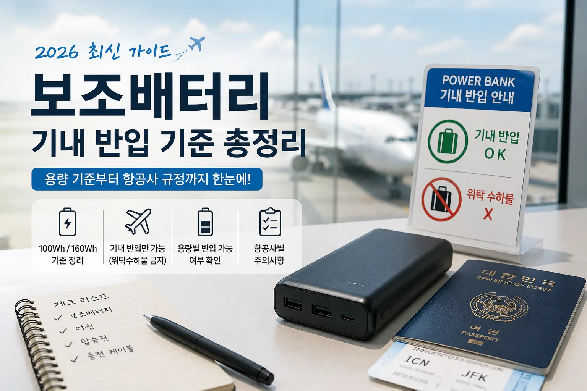

보조배터리 기내 반입 기준 총정리

보조배터리는 대부분 위탁수하물에 넣을 수 없고, 기내 휴대수하물로 가져가야 합니다. 일반적인 10,000mAh, 20,000mAh 보조배터리는 대체로 기내 반입이 가능하지만, 100Wh를 넘는 대용량 제품은 항공사 승인이 필요할 수 있습니다. 핵심 기준은 mAh가 아니라 Wh, 즉 와트시입니다.
보조배터리는 비행기에 가져갈 수 있을까?
결론부터 말하면 보조배터리는 비행기에 가져갈 수 있습니다. 다만 넣는 위치가 중요합니다. 일반적으로 보조배터리는 위탁수하물이 아니라 기내에 들고 타는 휴대수하물에 넣어야 합니다. 여행 가방에 넣어 부치는 것이 아니라, 백팩이나 캐리어 중에서도 기내로 가져가는 짐에 넣어야 한다는 뜻입니다.
스마트폰, 태블릿, 노트북을 많이 사용하는 요즘에는 보조배터리가 거의 필수 여행 준비물이 되었습니다. 하지만 공항 보안검색대에서 보조배터리 때문에 짐을 다시 꺼내거나, 위탁수하물에서 보조배터리를 빼야 하는 상황도 종종 생깁니다. 기준을 미리 알고 있으면 출국 당일 당황할 일이 줄어듭니다.
왜 보조배터리는 위탁수하물에 넣으면 안 될까?
보조배터리에는 대부분 리튬이온 배터리가 들어갑니다. 리튬이온 배터리는 에너지 밀도가 높아 작고 가벼운 크기로 많은 전기를 저장할 수 있지만, 외부 충격이나 내부 결함으로 과열될 가능성이 있습니다. 만약 화물칸에서 배터리 문제가 발생하면 승무원이나 탑승객이 바로 확인하고 대응하기 어렵습니다.
반대로 기내에 가지고 있으면 이상 발열, 연기, 냄새 같은 문제가 생겼을 때 상대적으로 빠르게 발견할 수 있습니다. 그래서 항공 안전 기준에서는 보조배터리처럼 분리된 예비 배터리를 위탁수하물보다 기내 휴대수하물로 가져가도록 정하고 있습니다.
보조배터리는 “비행기에 못 가져가는 물건”이 아니라 “부치는 짐에 넣으면 안 되는 물건”에 가깝습니다.
핵심 기준은 mAh가 아니라 Wh
보조배터리 제품 설명에는 보통 10,000mAh, 20,000mAh, 30,000mAh처럼 mAh 단위가 크게 적혀 있습니다. 하지만 항공기 반입 기준에서 더 중요한 단위는 Wh, 즉 와트시입니다. Wh는 배터리가 저장할 수 있는 전력량을 나타내는 기준입니다.
mAh만 보고 반입 가능 여부를 판단하면 헷갈릴 수 있습니다. 같은 20,000mAh 제품이라도 전압 기준에 따라 Wh가 달라질 수 있기 때문입니다. 다행히 대부분의 보조배터리에는 제품 본체나 상세페이지에 Wh가 함께 표시되어 있습니다.
Wh 계산법
제품에 Wh 표시가 없다면 아래 공식으로 대략 계산할 수 있습니다.
예를 들어 20,000mAh 보조배터리의 정격 전압이 3.7V라면 다음처럼 계산합니다.
즉 일반적인 20,000mAh 보조배터리는 100Wh 이하인 경우가 많아 기내 반입이 가능한 편입니다. 하지만 제품마다 정격 전압과 실제 표기가 다를 수 있으므로, 여행 전에는 제품 본체에 적힌 Wh 표시를 확인하는 것이 가장 안전합니다.
100Wh와 160Wh 기준 정리
보조배터리 기내 반입 기준에서 가장 자주 나오는 숫자가 100Wh와 160Wh입니다. 보통 100Wh 이하 제품은 개인 사용 목적의 범위에서 기내 반입이 가능합니다. 100Wh 초과 160Wh 이하 제품은 항공사 승인이 필요할 수 있습니다. 160Wh를 초과하는 보조배터리는 일반 승객이 기내에 가져가기 어렵다고 보는 것이 안전합니다.
| 배터리 용량 | 기내 반입 | 위탁수하물 | 비고 |
|---|---|---|---|
| 100Wh 이하 | 대체로 가능 | 불가 | 일반적인 보조배터리 대부분 해당 |
| 100Wh 초과 ~ 160Wh 이하 | 항공사 승인 필요 가능 | 불가 | 고용량 노트북용 보조배터리 일부 해당 |
| 160Wh 초과 | 대체로 불가 | 불가 | 일반 여행용으로는 피하는 것이 안전 |
용량별 반입 가능 여부
여행자가 가장 궁금해하는 것은 “내 보조배터리가 가능한가?”입니다. 아래 표는 일반적인 3.7V 기준으로 계산했을 때의 대략적인 예시입니다. 단, 실제 제품의 Wh 표기가 우선입니다.
| 표기 용량 | 대략 Wh | 반입 가능성 | 체크 포인트 |
|---|---|---|---|
| 5,000mAh | 약 18.5Wh | 가능한 편 | 소형 스마트폰용 |
| 10,000mAh | 약 37Wh | 가능한 편 | 가장 무난한 여행용 |
| 20,000mAh | 약 74Wh | 가능한 편 | 장거리 여행에 적합 |
| 30,000mAh | 약 111Wh | 항공사 확인 권장 | 100Wh 초과 가능성 있음 |
| 40,000mAh 이상 | 약 148Wh 이상 | 주의 필요 | 승인 또는 반입 제한 가능성 높음 |
10,000mAh와 20,000mAh 중 여행용으로 뭐가 좋을까?
짧은 국내 여행이나 1박 2일 정도의 여행이라면 10,000mAh 보조배터리도 충분한 경우가 많습니다. 스마트폰을 하루 한두 번 충전하는 용도라면 무게도 가볍고 휴대가 편합니다.
해외여행, 장거리 비행, 가족 여행, 태블릿이나 카메라까지 충전해야 하는 경우라면 20,000mAh가 더 안정적입니다. 다만 20,000mAh부터는 크기와 무게가 확실히 늘어나기 때문에 매일 들고 다니기에는 부담스러울 수 있습니다.
WORTHPICK 기준으로 가장 무난한 선택은 20,000mAh 이하입니다. 반입 기준에서도 비교적 안전한 범위에 있고, 스마트폰·이어폰·카메라 정도는 충분히 커버할 수 있습니다.
보조배터리 여러 개 가져가도 될까?
보조배터리 개수 제한은 항공사와 국가에 따라 다를 수 있습니다. 일반적으로 개인 사용 목적의 소량은 허용되는 경우가 많지만, 너무 많은 개수를 가져가면 판매 목적이나 안전 문제로 확인을 받을 수 있습니다.
특히 100Wh를 초과하는 고용량 배터리는 개수 제한이 더 엄격할 수 있습니다. 여행 전 이용 항공사의 수하물 안내 페이지에서 “리튬배터리”, “보조배터리”, “spare lithium battery” 항목을 확인하는 것이 좋습니다.
보조배터리 1~2개 정도는 대부분 여행에서 충분합니다. 여러 개를 가져가야 한다면 용량이 표시된 제품을 준비하고, 단자가 노출되지 않도록 파우치에 따로 보관하는 것이 좋습니다.
보조배터리 본체에 용량 표시가 없으면?
보안검색 과정에서 보조배터리의 용량을 확인하기 어려우면 문제가 될 수 있습니다. 제품 본체에 mAh, Wh, 정격 전압 등이 아예 보이지 않거나 지워져 있다면 반입이 거절될 가능성도 있습니다.
특히 오래된 보조배터리, 해외 직구 제품, 로고 없는 무표기 제품은 주의가 필요합니다. 여행용으로 사용할 보조배터리는 제품 본체에 용량과 인증 표시가 명확하게 적혀 있는 제품을 선택하는 것이 안전합니다.
비행 중 보조배터리 사용은 가능할까?
대부분의 경우 비행 중 스마트폰이나 태블릿을 보조배터리로 충전하는 것은 가능합니다. 다만 이착륙 시 전자기기 사용 안내, 항공사별 기내 규정, 기내 충전 제한 여부에 따라 다를 수 있습니다.
최근에는 일부 항공사에서 보조배터리를 좌석 위 선반에 넣어둔 채 사용하는 것을 제한하거나, 사용 중에는 승객이 직접 확인할 수 있는 위치에 두도록 안내하는 경우도 있습니다. 충전 중 발열이 심하다면 즉시 사용을 중단하는 것이 좋습니다.
여행 전 체크리스트
- 보조배터리를 위탁수하물이 아닌 기내 수하물에 넣었는지 확인하기
- 제품 본체에 mAh 또는 Wh 표시가 있는지 확인하기
- 30,000mAh 이상이면 항공사 규정을 미리 확인하기
- 단자가 금속 물체와 닿지 않도록 파우치에 보관하기
- 부풀어 오른 배터리나 파손된 제품은 가져가지 않기
- 여러 개를 가져갈 경우 개인 사용 목적 범위인지 확인하기
결론: 20,000mAh 이하가 가장 무난하다
보조배터리 기내 반입은 어렵게 생각할 필요가 없습니다. 핵심은 세 가지입니다. 첫째, 위탁수하물에 넣지 말고 기내로 가져가기. 둘째, 100Wh 이하인지 확인하기. 셋째, 제품 본체에 용량 표시가 있는지 확인하기입니다.
일반적인 10,000mAh, 20,000mAh 보조배터리는 대부분 여행용으로 무난합니다. 반면 30,000mAh 이상 제품은 100Wh를 넘을 수 있으므로 항공사 규정을 미리 확인하는 편이 좋습니다. 출국 당일 공항에서 당황하지 않으려면, 여행 전 보조배터리의 Wh 표시부터 확인해두세요.
FAQ
일반적으로 보조배터리는 위탁수하물에 넣을 수 없습니다. 기내에 들고 타는 휴대수하물에 넣어야 합니다.
대부분의 20,000mAh 보조배터리는 100Wh 이하인 경우가 많아 기내 반입이 가능한 편입니다. 다만 제품 본체의 Wh 표시를 확인하는 것이 가장 정확합니다.
30,000mAh 제품은 계산 기준에 따라 100Wh를 넘을 수 있습니다. 이 경우 항공사 승인이 필요할 수 있으므로 출국 전 반드시 확인하는 것이 좋습니다.
개인 사용 목적의 소량은 허용되는 경우가 많지만, 항공사와 국가별로 기준이 다를 수 있습니다. 여러 개를 가져갈 예정이라면 이용 항공사의 수하물 규정을 확인하세요.
100Wh 이하라면 가능한 경우가 많지만, 100Wh를 초과하면 항공사 승인이 필요할 수 있습니다. 160Wh 초과 제품은 일반 승객 반입이 어렵다고 보는 것이 안전합니다.